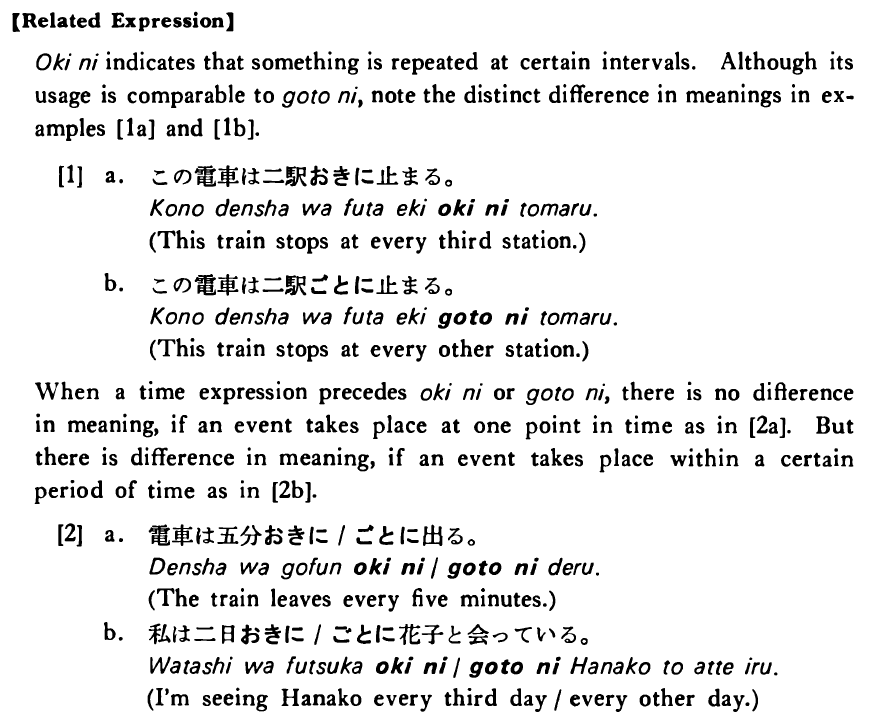

ごとに (B. 128)
- (ksa).
- 私は三時間ごとに薬を飲んだ・飲みました。
- I took medicine every three hours.
- (ksb).
- 正月は家ごとに門松を立てる・立てます。
- They put up pine tree decorations at every house on New Year's Day.
- (a).
- 一課ごとに試験がある。
- There is a test after every lesson.
- (b).
- 学期ごとに先生が変わる。
- Every semester teachers change.
- (c).
- 木村さんは会う人ごとに挨拶している。
- Mr. Kimura greets everyone he meets.
- (d).
- 三日ごとにテニスをしています。
- I'm playing tennis every third day.
